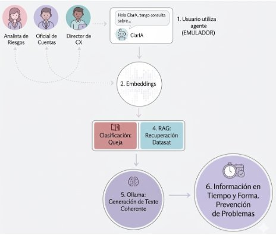

Agente de IA para el sector financiero que analiza reclamos bancarios en lenguaje natural, identifica causas raíz y genera respuestas fundamentadas en datos reales.
Las instituciones financieras reciben miles de reclamos diarios pero carecen de herramientas para identificar automáticamente sus causas raíz. El resultado: análisis manual lento, reacción a síntomas en lugar de problemas estructurales, y recursos desperdiciados.
El objetivo de ClarIA era doble: convertir comentarios no estructurados en una base de conocimiento accionable, y detectar tendencias emergentes antes de que se conviertan en problemas sistémicos.
Se utilizó el dataset público del Consumer Financial Protection Bureau (CFPB). Contiene 1.28 millones de reclamos; de ellos, 383.000 incluyen narrativa semántica del cliente — el insumo clave del sistema.
Se trabajó exclusivamente con banca tradicional, descartando fintechs y otras instituciones. La limpieza incluyó remoción de secuencias de anonimización ("XXXX"), filtrado de narrativas incoherentes, y un filtro de calidad con Llama 3.2 que descartó el 2.47% de los registros como ruido de baja densidad informativa.
La arquitectura implementa seis pasos: el usuario consulta al agente → la consulta se vectoriza con all-MiniLM-L6-v2 → se recuperan los fragmentos más relevantes del índice FAISS → el modelo genera una respuesta anclada en esos fragmentos reales.
La clave del sistema RAG es que el modelo no inventa: cada respuesta está anclada en fragmentos reales del dataset. La división semántica en chunks de 300 caracteres con solapamiento de 20 preserva el hilo narrativo del reclamo. La búsqueda por cercanía semántica — no por coincidencia de palabras — permite encontrar casos relacionados aunque usen vocabulario distinto.

SYSTEM INSTRUCTIONS:
You are a neutral and analytical Compliance Senior Assistant.
Your goal is to summarize customer complaints
to identify service failures.
RULES:
1. Analyze the content of the attached complaints.
2. Summarize the main issues.
3. Do not express personal opinions;
only report user facts.
COMPLAINT CONTEXT: {context}
USER QUESTION: {query}
Se evaluaron cuatro modelos locales via Ollama en velocidad, estabilidad y calidad del resumen.
| Modelo | Tiempo (seg) | Estabilidad | Calidad |
|---|---|---|---|
| Llama 3.2 1B elegido | 2.06 – 2.08 | Alta (±0.01s) | Objetivo y profesional |
| Phi-3 Mini | 15.49 – 51.95 | Muy baja (±36s) | Capta frustración |
| Mistral 7B | 30.47 – 45.18 | Baja (±14s) | Exhaustivo y técnico |
| Solar 10.7B | 36.01 – 38.98 | Media (±2s) | Directo a los dolores |
Se implementó un control que mide la distancia semántica entre la consulta del usuario y la base de conocimiento indexada. Si el score supera 1.0, el sistema limita la respuesta en lugar de generar contenido inventado.
La prueba con una consulta fuera de dominio ("What is the recipe for a chocolate cake?") devolvió scores de 1.55 a 1.60 — correctamente identificada como fuera de alcance y bloqueada.
Para ilustrar el funcionamiento del sistema, se consultó: "What issues are reported regarding mortgage interest rate calculations?"
El sistema recuperó cinco fragmentos relevantes del dataset y generó el siguiente resumen:
PREGUNTA: What issues are reported regarding mortgage
interest rate calculations?
RESPUESTA DE CLARIA:
Based on the attached complaint, the main issues reported
regarding mortgage interest rate calculations are:
1. The mortgage payments for an existing loan were not
applied properly to the mortgage issued.
2. The mortgage and communication about aggregating monthly
payments into a payment request was not done as promised.
3. The interest calculation costs more money due to incorrect
numbers, which also affect the amortization schedule.
Los tres problemas identificados — errores en el cálculo de intereses, fallas de comunicación en pagos mensuales, y aplicación incorrecta de pagos extraordinarios al capital — son exactamente los puntos críticos que un analista de riesgos necesitaría escalar. ClarIA los sintetizó en segundos desde miles de reclamos individuales.